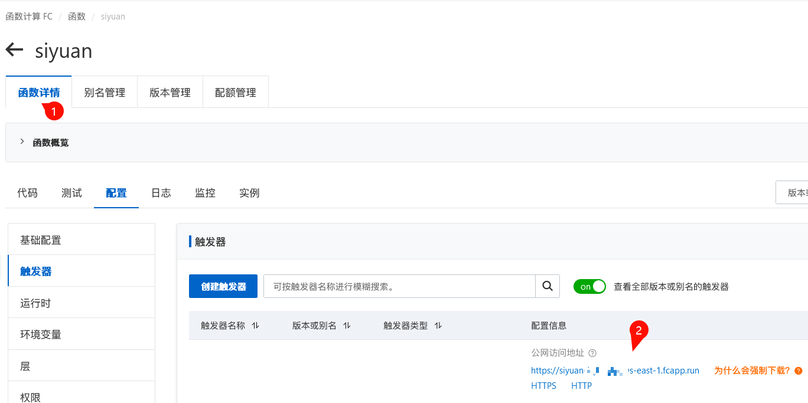
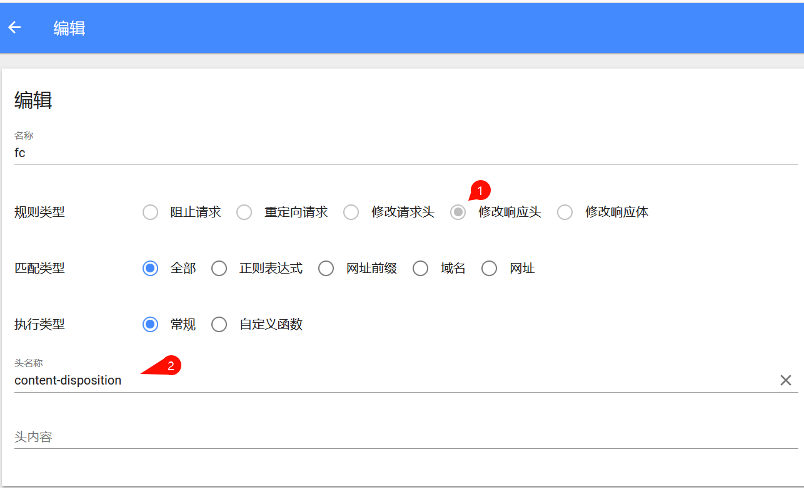

函数计算域名调试web应用
如果没有域名的话，可以利用一个小技巧来绕过阿里云对于函数计算域名使用的限制，从而直接使用阿里云的域名进行访问
先进入如下页面复制公网访问地址

然后安装可以修改响应头的浏览器插件，例如
https://github.com/FirefoxBar/HeaderEditor
，然后进行类似如下的配置，修改掉阿里云附加的 content-disposition 响应头，就可以直接在浏览器中打开之前阿里云提供的公网访问地址了。🎉
